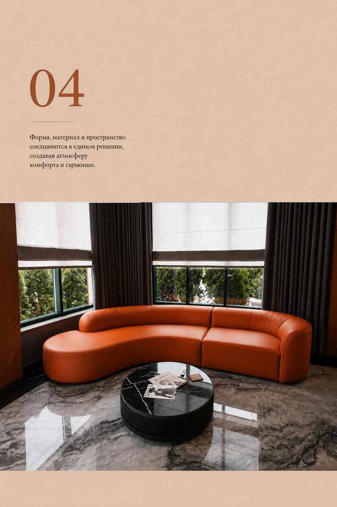
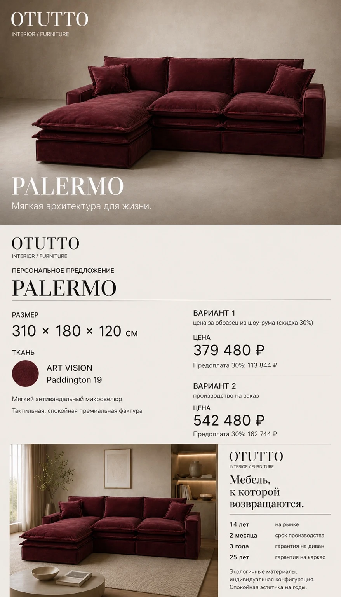
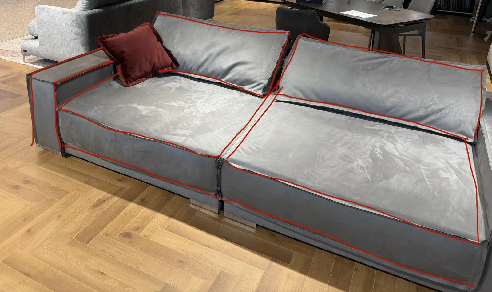
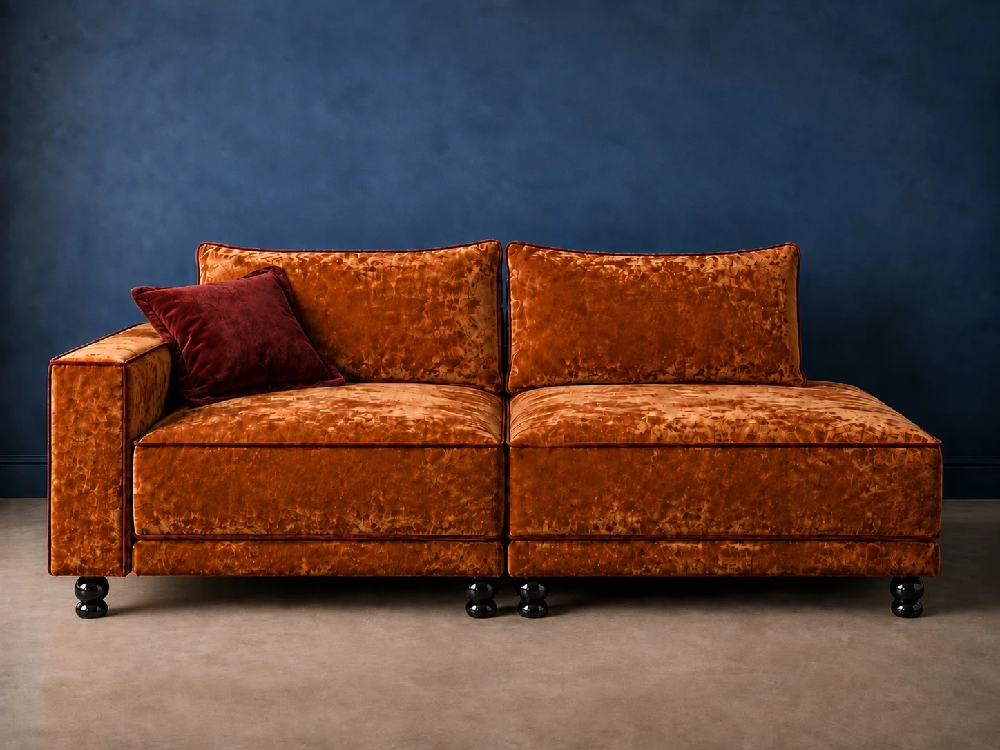

Furniture manufacturing · Portfolio
Presentations
and commercial proposals.
Production slides, a proposal with product specifications and pricing, and furniture advertising visuals.
01 / Original presentation
From idea to realization
A 10-slide presentation about furniture design and production.
Swipe or use the arrows. Tap a slide to enlarge it. You can also open the original PDF. Open original PDF (10 pages)
02 / Presentation concept
Furniture is a Story
I prepared a set of furniture presentation pages: cover, sketches, production, and the finished interior.
Each stage has a photograph, heading, and short caption, so viewers can follow the manufacturing process without long explanations.

03 / Commercial proposal
Palermo: the details in one document
I designed a one-page proposal for the Palermo sofa, combining the product image, measurements, configuration, upholstery and price. Buyers can review the product and terms in one document.
View the full document
04 / Product storytelling
From source photo to promotional image


The left image marks the original sofa's shape and construction details. The right image shows the final visualization in the selected upholstery. It presents the intended finish before the item is made.
Project scope
Presentation structure, copywriting, image selection, slides and commercial proposal design.